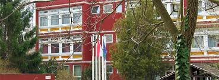
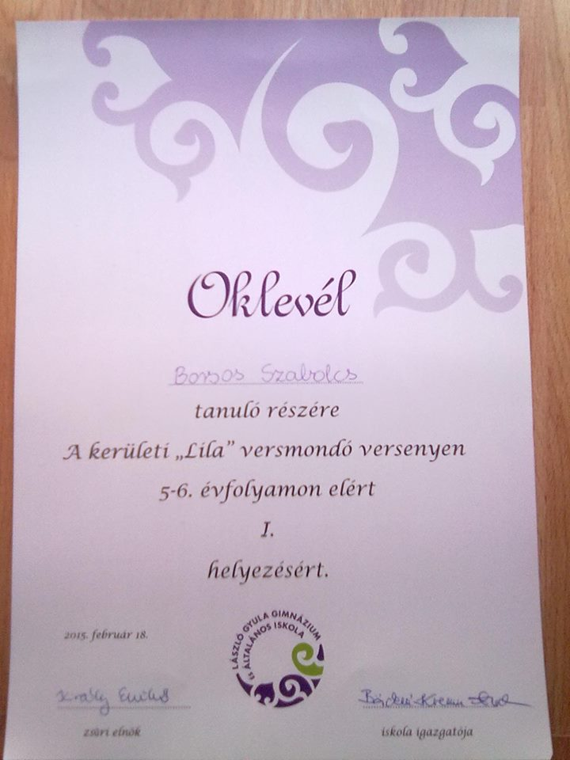

Borsos Szabolcs vagyok, a BMSZC Neumann János Számítástechnikai Szakgimnázium 9-es tanulója. 2003-ban Budapesten születtem. Szeretem a
videójátékokat legfőbbképen az rpg/mmorpgket (pl.: World of Warcraft, Mass Effect), de a stratégiai játékok közül is sok a kedvencem közé tartozik (pl.: Warcraft III, Heroes Might&Magic IV-V ). Mielőtt a Neu-ba jöttem volna
a László Gyula Általános iskolában tanultam.
Borsos Szabolcs vagyok, a BMSZC Neumann János Számítástechnikai Szakgimnázium 9-es tanulója. 2003-ban Budapesten születtem. Szeretem a
videójátékokat legfőbbképen az rpg/mmorpgket (pl.: World of Warcraft, Mass Effect), de a stratégiai játékok közül is sok a kedvencem közé tartozik (pl.: Warcraft III, Heroes Might&Magic IV-V ). Mielőtt a Neu-ba jöttem volna
a László Gyula Általános iskolában tanultam.
Első, egyetlen és legfőbb indokomnak azt mondanám, hogy szeretnék megtanulni programozni, mivel ebben az
ágban szeretnék elhelyezkedni felnőttként és úgy gondolom,
hogy a Neumann tud segíteni nekem a célom elérésében.

Úgy gondolom, hogy még van időm ezen gondolkodni, ezért még nem foglalkoztam sokat ennek eltervezésével,
de erősen hajlok afelé, hogy kiköltözzek magyarországból és
megpróbáljak valahol máshol elhelyezkedni. Szinte biztos,
hogy szeretnék a felső oktatásban is részt venni de még azt, hogy hol és mikor nem vettem fontolóra.
Iskolás éveim során sikerült egy pár versenyen jó eredményt elérnem.
- 2015-ben 5-esen megnyertem az ötödik és hatodikosoknak szóló kerületi vesmondó versenyt
- 2017-ben megnyertem a 7. osztályosoknak szóló Földrajz kerületi versenyt
